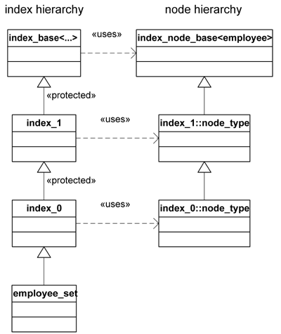
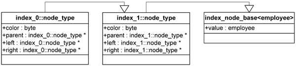
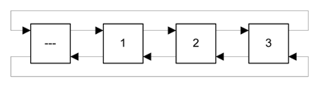
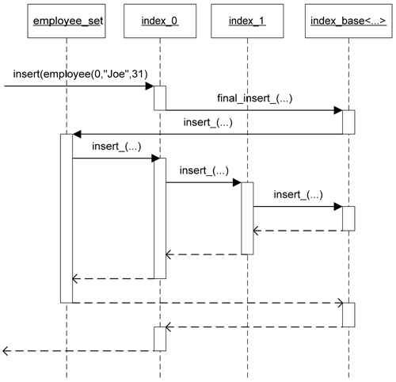

Boost.IndexedSet Index implementation guideBoost.IndexedSet Index implementation guide
Boost.IndexedSet Index implementation guideBoost.IndexedSet Index implementation guideBoost.IndexedSet is designed so as to accept new index types without changes to the base code. From this perspective, the library can be regarded as a generic framework for the composition of node-based indices into a unified data structure. The following documentation is intended for those people interested in the internal structure of the library and the procedure to augment it with new index types: the reader is advise to acquire a good working knowledge of the library before studying this section.
indexed_set enjoys a certain toolkit nature in that many
different data structures can be instantiated out of the combination of
an arbitrary number of indices. In order to take the best advantage of
this possibility, Boost.IndexedSet is designed in such a way that the
indexed_set class template is not tightly coupled with the
types of indices currently provided, but rather it accepts whatever
index implementation meeting certain generic conditions. This approach
is reminiscent of the generic style adopted by STL algorithms, which
operate on any type modeling the aproptiate iterator concepts.
Boost.IndexedSet also provides a number of utility classes that make it easier to implement new index types. These utilities are primarily devoted to the addition of quality of implementation facilities, as safe mode checking.
In order to be able to write a custom index, it is first necessary to gain some insight into the internal structure of Boost.IndexedSet. WRITE SOMETHING MORE USEFUL HERE.
In order to better understand the internal structure of an
indexed_set container, it might be useful to think of it
as a layered component, each layer being the implementation of
an index specified in the index_list. This conceptual
view can be modelled in C++ as a linear hierarchy of
types: such a hierarchy is a sequence of classes
C1,...,CN such
that Ci is derived from
Ci+1. Boost.IndexedSet extensively
uses linear hierarchies in its implementation. A particular
instantation of indexed_set results in the construction of
two related linear hierarchies:
indexed_set instantiation proper,
while the second describes the internal nodes use to hold and manage
the elements of the indexed_set. For example, consider the
following type definitions:
typedef indexed_set< employee, index_list< unique<identity<employee> >, non_unique<member<employee,std::string,&employee::name> > > > employee_set; typedef employee_set::nth_index_type<0>::type index_0; typedef employee_set::nth_index_type<1>::type index_1;
The linear hierarchies associated with employee_set are
depicted in UML notation in the figure. The node hierarchy is not exposed to
the user of the library.

Fig. 1: Linear hierarchies associated with employee_set.
It can be seen that indexed_set is actually a linear hierarchy of the
different index implementations. So, the operation get<n> just
upcasts the given employee object to the corresponding index
implementation class. (Note that the user cannot perform this upcast directly as
derivations are protected, except that from index_0 to
employee_set.)
The associated node hierarchy is synchronized with the index hierarchy in
such a way that each index implementation class uses its own node type
in the hierarchy. It is important to observe than, globally, indexed_set
allocates and manages objects of the final, most-derived node class.
Both hierarchies are topped by special internal classes provided by Boost.IndexedSet, whose roles we will see later.
Most data structures are constructed as more or less complex collections of nodes. Typically, a node consists of two types of information:
indexed_set, its associated node hierarchy describes
the different types of nodes corresponding to each index involved.
As the most derived node containes all of the other types in the hierarchy, only node objects of this most derived type will be used by every index implementation for each to maintain its own data structure. This has several important implications:
indexed_set final class. Index implementation classes
are passed these nodes, of which they must use only the payload
and the dedicated additional data section.
indexed_set have the same number
of elements.
value
field of indexed_sets::index_node_base<Value>, which
is the topping element of the node hierarchy.
Figure 2 shows a possible layout of the employee_set node
hierarchy, in which both indices' data structures are implemented as
red-black trees. Please note that this is not necessarily the real
implementation obtained in Boost.IndexedSet.

Fig. 2: Node hierarchy of employee_set.
In the implementation of many data structures like red-black trees, lists, etc., it is very common to maintain a dummy node from which the rest of the structure is built. For instance, doubly linked lists usually resort to such a header node for the simplification it brings to the implementation code in border cases.

Fig. 3: Example of doubly linked list using a header node.
In order to cover this common situation, indexed_set
preallocates a header node for those indices that need such
a facility. Otherwise, each index implementation would have to
construct its own header node without sharing it with the
other indices. Thus in general an indexed_set
container with n elements allocates
n+1 nodes. The element value held by this header
is never constructed and should not be read in any manner:
it is only the additional data space that is meant to be
used by indices.
We have seen that node hierarchies are "passive" in the sense that little coupling exists between the diferent layers. By contrast, linear hierarchies are not a mere juxtaposition of index class implementations: a good deal of cooperation is needed between them to maintain the different data structures synchronized. For instance, an insertion operation like
involves the updating of the corresponding data structures for each index inemployee_set es; es.insert(employee(0,"Joe",31));
employee_set. Moreover, the outcome of the operation
is dependent on each index, as unique indices may ban the insertion
of a given element:
employee_set es; es.insert(employee(0,"Joe",31)); // inserts Joe through index #0 es.get<1>().insert(employee(0,"Anna",27)); // fails!
In this example, the second insertion is performed through index #1, but does not succeed as index #0 bans it (Joe has the same ID.) Thus, some sort of communication between indices is carried out behind the scenes. Boost.IndexedSet specifies a mechanism to achieve this effect.
Let us examine in detail the different interfaces provided by an index
implementation class, considering for instance index_0 as
defined previously.
IMAGE MISSING
The public interface features the common member functions of a regular
index, like begin, end, insert, etc.
The protected part of index_0 provides a number of backbone
member functions, which by convention are suffixed with _.
The signature and behavior of such backbone functions are specified by
Boost.IndexedSet so that operations that affect globally to all indices
can be performed in an orchestrated manner between them. Consider the
insertion operation
employee_set es; es.insert(employee(0,"Joe",31));
This operation resolves in a predetermined flow of inter-index calls as depicted in figure 5:

Fig. 5: Control flow of an insertion operation.
The invocation of insert is issued to index_0,
which forwards this operation to the final class employee_set
through an indirect call to index_base<...>::final_insert_.
(This indirection is required as index_0 is not granted
access to backbone functions of employee_set.)
employee_set::insert_ does some job, like allocating
a new node for the element to be inserted, and then initiates a cascading
function call traversing the corresponding insert_ backbone
functions of each index. The cascading invocation is terminated by
index_base<...>. So, employee_set::insert_
performs the global insertion giving each index the opportunity
to carry out the local actions required for this operation: node linking,
banning (if a collision is detected), etc.
Boost.IndexedSet specifies backbone member functions for insertion, hinted insertion, deletion, updating and swapping. This specification is explained in detail in SECTION TO BE WRITTEN.
index_base
The root of the index hierarchy is a particular instantiation of a
class template named index_base. It is not necessary
to know the template arguments with which index_base
is instantiated in each case, so we refer to this class simply
as index_base<...>. index_base<...>
provides several utilities to its descendant index implementation
classes, among them the following:
indexed_set class: for instance,
final_insert forwards to
indexed_set::insert_. Note that these final
backbone functions are not directly accessible from an index,
as they are protected (protected derivation grants access
from the derived class to the base, but not the other way
around.)
index_base<...>. Some of these
terminators are do-nothing functions, e.g. erase_,
while others, like insert_, perform some task.
index_base<...> provides the initial values
for these types.
SECTION TO BE WRITTEN gives a detailed description of all facilities
offered by index_base<...> to the index implementation
classes.
Consider again the type definitions of employee_set
that we are using throughout this section:
typedef indexed_set< employee, index_list< unique<identity<employee> >, non_unique<member<employee,std::string,&employee::name> > > > employee_set; typedef employee_set::nth_index_type<0>::type index_0; typedef employee_set::nth_index_type<1>::type index_1;
It is clear that index_0 is directly related to
unique<identity<employee> >. At first sight, one
might think that unique<identity<employee> > is
index_0, but this is not the case. Actually,
unique<...> is a so called index specifier, a special
class providing the information from which Boost.IndexedSet will derive
both the index implementation class and its associated node type. This additional
level of indirection is necessary as the actual instantiation of the
index implementation class depends on contextual information which is
not part of the arguments passed to unique<...> (for example,
the allocator class used or the parent in the index hierarchy.)
We have already reviewed the main concepts involved in the construction of
indexed_set containers out of the specification of several
indices. To summarize, an index consists of the following components:
unique<...> expects the user to provide
an appropriate key extractor and a comparison predicate.
detail
namespace.
The process of implementing a new index for use with Boost.IndexedSet
will be illustrated with listed, a very simple index that
maintains a doubly linked list of elements and provides a minimal part
of the interface of std::list. listed is
actually a simplified version of indexed_sets::sequenced,
and lack important features necessary in a production-quality
implementation. Most design decisions related to listed
will be taken during the course of the tutorial.
WRITE MORE STUFF
Revised January 21th 2004
Copyright © 2003-2004 Joaquín M López Muñoz. Use, modification, and distribution are subject to the Boost Software License, Version 1.0. (See accompanying file LICENSE_1_0.txt or copy at www.boost.org/LICENSE_1_0.txt)